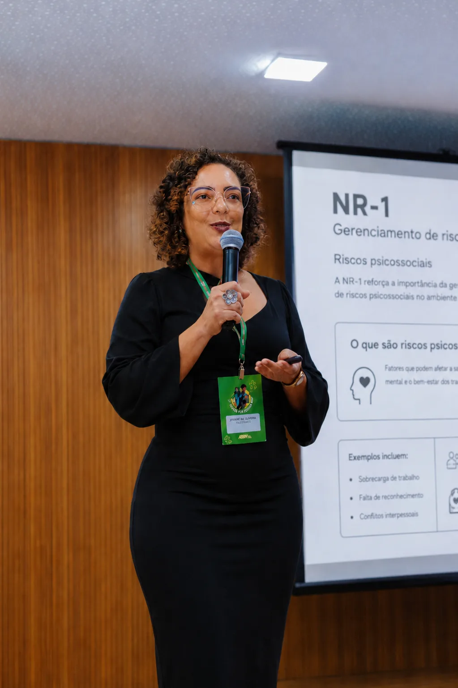

NR-1 en vigor: factores psicosociales sin checklist vacío
Qué documentar, cómo sostener evidencias y cómo transformar los factores psicosociales en un lenguaje útil para la gestión, la prevención y la fiscalización.
Pedir información →Charlas con contenido clínico aplicado a la realidad de la gestión: NR-1 (norma brasileña de gestión de riesgos laborales), factores psicosociales, liderazgo e integridad organizacional. Para empresas, eventos sectoriales, RR. HH., equipos de salud laboral y líderes que buscan profundidad, método y casi tres décadas de experiencia corporativa.

Cuatro temas centrales, ajustables al público, al momento de la empresa y al objetivo del evento.
Qué documentar, cómo sostener evidencias y cómo transformar los factores psicosociales en un lenguaje útil para la gestión, la prevención y la fiscalización.
Pedir información →Cómo reconocer señales, conducir las primeras conversaciones, distinguir el apoyo del líder del papel clínico y evitar decisiones improvisadas frente al sufrimiento.
Pedir información →Criterios técnicos para nombrar mejor situaciones que involucran enfermedad, valores vulnerados, nexo causal, investigación interna y responsabilidad.
Pedir información →Una charla basada en el libro, para crear un lenguaje común entre personas, liderazgo, salud ocupacional y gestión.
Pedir información →
La charla traduce temas como burnout, acoso, factores psicosociales y seguridad psicológica en decisiones que RR. HH., salud laboral, líderes y dirección pueden sostener en el día a día.
Registros de charlas y paneles en congresos y eventos corporativos, del Fórum Saúde 360 a talleres con la ABRH (Asociación Brasileña de Recursos Humanos).



Para empresas y eventos con público a distancia. Incluye la grabación enviada al contratante y las diapositivas en PDF para distribución interna.
Propuesta según el alcance
Para grandes eventos en línea con público amplio. Incluye los mismos entregables de la modalidad estándar, con producción dedicada al evento.
Propuesta según el alcance
Para empresas y eventos en la región metropolitana de Salvador. Incluye grabación, diapositivas en PDF y un libro autografiado para el organizador.
Propuesta según el alcance
Para eventos en capitales, ciudades del interior y otras localidades. Los mismos entregables de las modalidades presenciales, con traslado, alojamiento y viáticos definidos según la ciudad.
Propuesta según el alcance
Experiencia con empresas y eventos sectoriales, incluidos PetroRecôncavo, Alvopetro, ABRH-BA y ABRH Sergipe. Más de 130 charlas realizadas · más de 10 mil profesionales capacitados · 99% de evaluaciones positivas.
Sí. Hay una modalidad presencial para la región metropolitana de Salvador y otra para otras capitales y ciudades del interior, con traslado, alojamiento y viáticos definidos según la ciudad. Para públicos a distancia, también existe el formato en línea para hasta 300 personas.
Todas las modalidades incluyen la grabación enviada al contratante y las diapositivas en PDF para distribución interna. En las charlas presenciales en Salvador, el organizador recibe también un ejemplar autografiado de Quando o Trabalho Dói.
Las modalidades en línea duran unos 60 minutos. Las presenciales llegan a 90 minutos, incluido el espacio para preguntas del público.
Sí. Cada tema se ajusta al público, al objetivo y al momento de la organización. También hay enfoques listos para SIPAT, encuentros de liderazgo y semanas internas.
La propuesta se arma por evento y considera formato, tamaño del público, ciudad y material entregado. Al enviar el contexto del evento, la respuesta llega con el tema recomendado, el formato y el valor.
Las solicitudes enviadas por el formulario se responden en un plazo de 48 horas hábiles. Por WhatsApp, la respuesta suele ser más rápida. También es posible agendar una conversación de 20 minutos directamente en la agenda.
Una guía de 27 páginas (en portugués) para profesionales que necesitan evaluar, con método, la relación entre trastornos mentales y contexto laboral. Basada en la Resolución 2.323/2022 del Consejo Federal de Medicina de Brasil y en la NR-1.
Recibir la guía gratis →
Envíe el contexto del evento, el público, el objetivo y la fecha prevista. La propuesta vuelve con el tema recomendado, el formato y los próximos pasos.
¿Organiza un evento? Material para organizadores (PDF, en portugués): biografía en tres extensiones, temas, formatos, estructura necesaria y fotos para difusión.